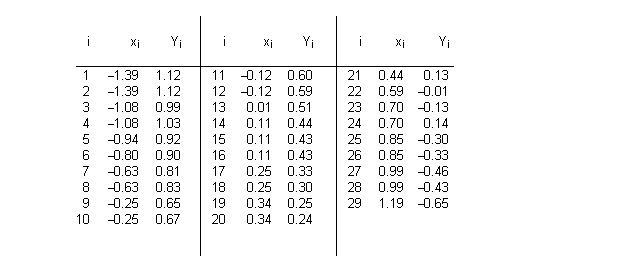
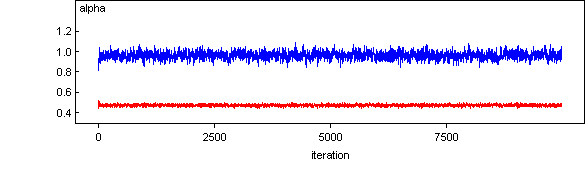
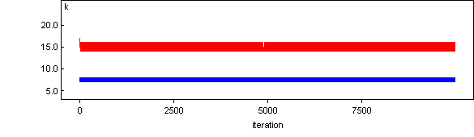
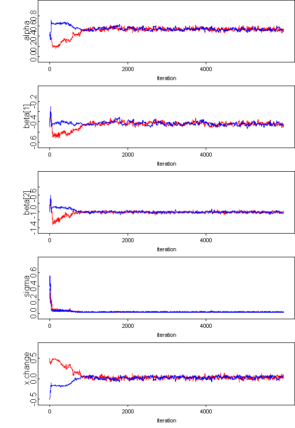

![[stagnant0]](stagnant0.bmp) Stagnant: a changepoint problem
Stagnant: a changepoint problem and an illustration of how NOT
to do MCMC!)
Carlin, Gelfand and Smith (1992) analyse data from Bacon and Watts (1971) concerning a changepoint in a linear regression.

Note the repeated x's.
We assume a model with two straight lines that meet at a certain changepoint x k --- this is slightly different from the model of Carlin, Gelfand and Smith (1992) who do not constrain the two straight lines to cross at the changepoint. We assume
Y i ~ Normal( m i , t )
m i = a + b J[i] (x i - x k ) J[i]=1 if i <= k J[i]=2 if i > k
giving E(Y) = a at the changepoint, with gradient b 1 before, and gradient b 2 after the changepoint. We give independent "noninformative'' priors to a , b 1 , b 2 and t .
Note: alpha is E(Y) at the changepoint, so will be highly correlated with k. This may be a very poor parameterisation.
Note way of constructing a uniform prior on the integer k, and making the regression
parameter depend on a random changepoint.
model
{
for( i in 1 : N ) {
Y[i] ~ dnorm(mu[i],tau)
mu[i] <- alpha + beta[J[i]] * (x[i] - x[k])
J[i] <- 1 + step(i - k - 0.5)
punif[i] <- 1/N
}
tau ~ dgamma(0.001,0.001)
alpha ~ dnorm(0.0,1.0E-6)
for( j in 1 : 2 ) {
beta[j] ~ dnorm(0.0,1.0E-6)
}
k ~ dcat(punif[])
sigma <- 1 / sqrt(tau)
}
Data ( click to open )
Inits for chain 1 Inits for chain 2 ( click to open )
Traces of two chains shows complete dependence on starting values


Results are hopeless - no mixing at all.
Note: alpha is E(Y) at the changepoint, so will be highly correlated with k. This may be a very poor parameterisation.
TRY USING CONTINUOUS PARAMETERISATION
model
{
for(i in 1 : N) {
Y[i] ~ dnorm(mu[i], tau)
mu[i] <- alpha + beta[J[i]] * (x[i] - x.change)
J[i] <- 1 + step(x[i] - x.change)
}
tau ~ dgamma(0.001, 0.001)
alpha ~ dnorm(0.0,1.0E-6)
for(j in 1 : 2) {
beta[j] ~ dnorm(0.0,1.0E-6)
}
sigma <- 1 / sqrt(tau)
x.change ~ dunif(-1.3,1.1)
}
Data ( click to open )
Inits for chain 1 Inits for chain 2 ( click to open )
Results
